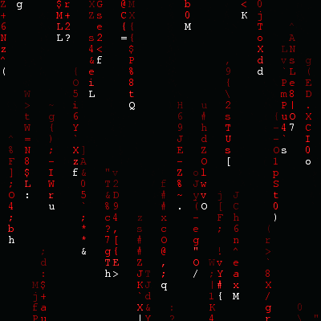

Welcome to SpyNet access tutorial website!
So SpyNet is a dark web website
where is free hacking tools and leaks and more!
Let's see how you can access SpyNet
First download Tor Browser
and connect to Tor Network
After that set the default search engine to duckduckgo.onion
and put there SpyNet url
http://2kqxzur6jsljwphyyosohyfv3bkbbmv7qje4kg2szz5cj24huzt3vdyd.onion